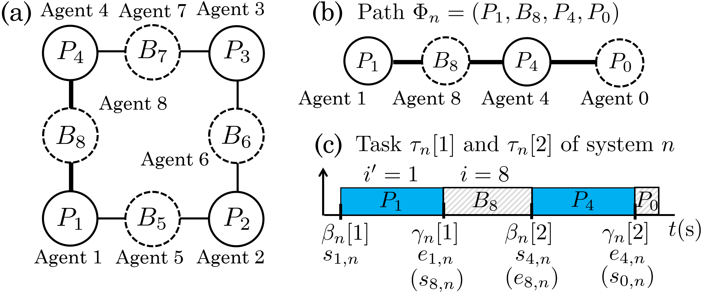
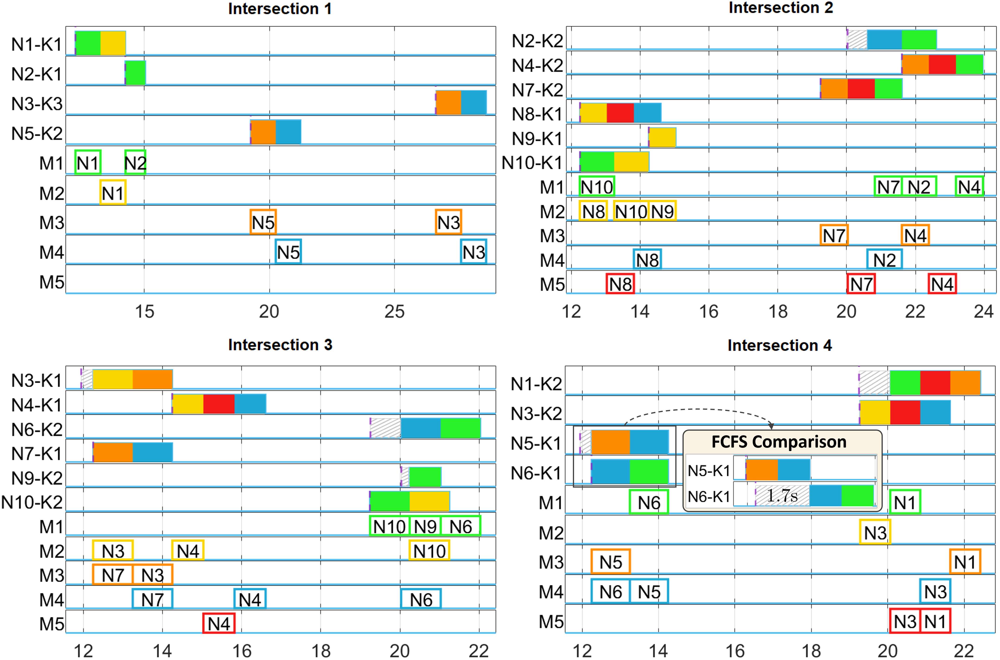

Research Project
Multi-Agent Scheduling in Warehouse and Traffic Networks
A distributed scheduling and control framework for networked systems whose agents must traverse multiple interconnected shared resources safely and on time.
Distributed Optimization Model Predictive Control Decision-Tree Search Multi-Agent Coordination
Project Visualizations
These animations show the contention-resolution principle and its application to warehouse and traffic scheduling scenarios.
Overview
Many cyber-physical systems execute recurring tasks that require a sequence of shared resources. When several agents request the same resource, the resulting contention changes task timing and can directly affect control performance. A centralized scheduling and control formulation can represent these interactions, but it quickly becomes difficult to solve as the number of agents and interconnected resources grows.
This project separates the large co-design problem into coordinated local problems. Each resource bundle resolves its own conflicts, while neighboring bundles exchange timing information so that an agent's schedule remains consistent along its complete route. The broader goal is to retain explicit safety and timing constraints without relying on one centralized scheduler.

Two-Level Scheduling Architecture
Macro scheduling aligns every robot's arrival and exit times across the graph. Micro scheduling resolves local conflicts and prevents vehicle collisions.
Macro scheduling
Arrival/Exit-Time Consensus

and exit times
and feasible timing
Micro scheduling
Collision-Free Scheduling

-
Coordinate across resource bundles
Consensus ADMM decomposes the network-level problem and coordinates task start and finish times between connected resource bundles.
-
Resolve local contention
A contention-resolving MPC module uses decision-tree search to generate feasible local schedules instead of solving one large mixed-integer model.
-
Preserve route-wide timing consistency
Path-specific contention constraints and consensus penalties align local schedules while maintaining mutual exclusion across shared resources.
Example Simulation
In one simulation example with ten vehicles following heterogeneous routes through a 2 × 2 traffic network, the distributed method reduced total scheduling delay from 11.20 s under a first-come-first-served policy to 3.01 s, a reduction of about 73%. The method converged in 68 coordination iterations for this case.
Six additional random cases with 8 to 25 vehicles also produced lower delay than the first-come-first-served baseline. These results demonstrate the practical value of combining local combinatorial scheduling with distributed timing coordination; they do not assume global optimality of the nonconvex distributed problem.
- Network
- 2 × 2 intersections
- Shown example
- 10 vehicles
- Total delay
- 3.01 s vs. 11.20 s
- Reduction
- About 73%
